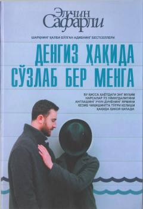

DHHayot va muhabbat haqidagi ta'sirli qissa.
Ushbu qissa hayotdagi eng muhim narsalar o'z uyingdaligini anglash uchun dunyoning yarmini kezib chiqishing kerakligi haqida hikoya qiladi. Asar insonni hayotga teranroq qarashga, yorug'likka intilish bilan orzularni ro'yobga chiqarishga hamda vaqtni isrof qilmaslikka da'vat etadi. Hayotning bebaqoligi va har lahzaning qadrli ekani ta'sirli til bilan yoritilgan.